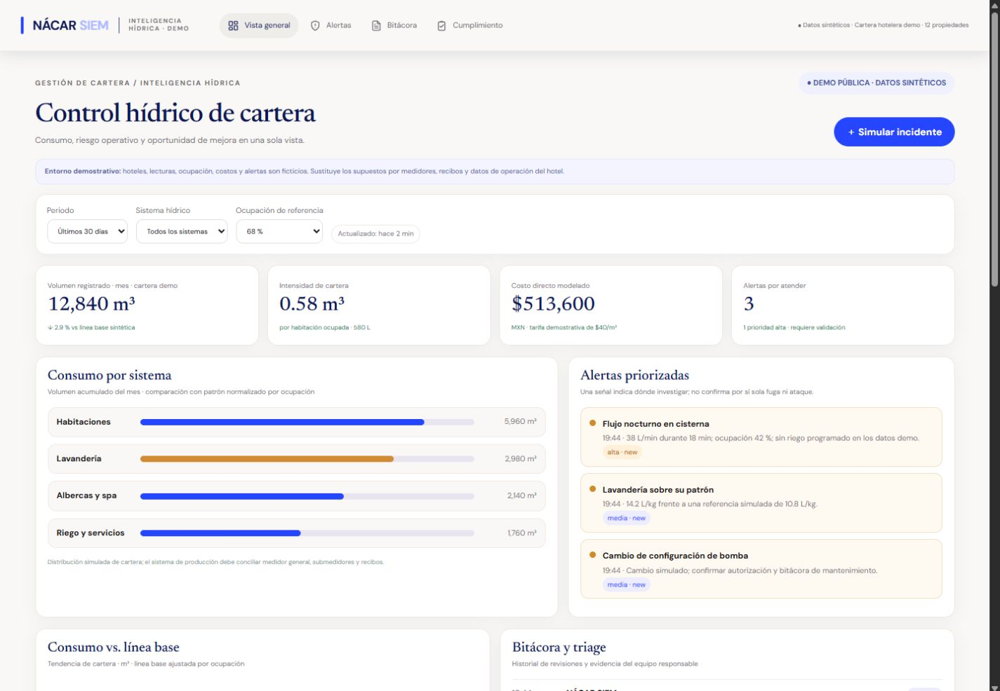
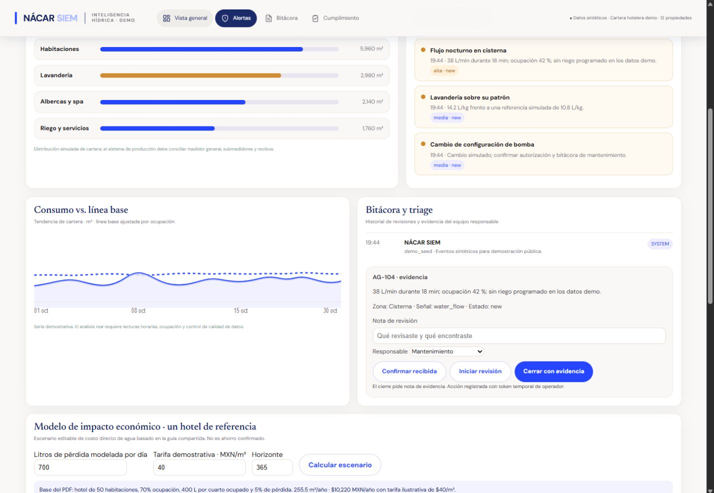
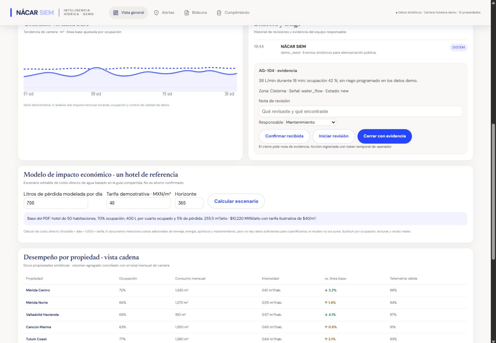
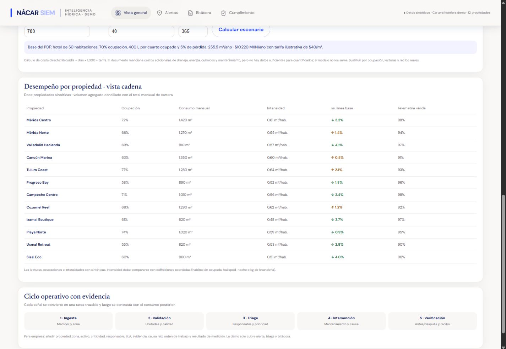

Capturas para la presentación
Vistas del prototipo empresarial. Las lecturas, hoteles, alertas y supuestos económicos son sintéticos; el producto no está conectado a medidores reales.




Vistas del prototipo empresarial. Las lecturas, hoteles, alertas y supuestos económicos son sintéticos; el producto no está conectado a medidores reales.



